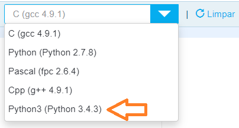

A ordem dos problemas, do mais fácil para o mais difícil, na minha opinião, é:
- Canal de TV
- Aumento dos Trabalhadores
- Bônus de Viagem
- Campeonato
- Bissexto
- Adotar, um ato de amor
Agora passa pra direita para ver as dicas de cada questão 😎
A dica para esta questão é: assista a resolução na aula.
Esse problema só tem 1 exemplo, então é importante que você crie seus próprios exemplos para testar direitinho. Além do salário acima de R$500, teste também com salário entre R$300 e R$500, além de um outro teste com salário menor que R$300, de forma a cobrir todos os casos possíveis.
- São bissextos todos os anos múltiplos de 400, p.ex: 1600, 2000, 2400, 2800...
- São bissextos todos os múltiplos de 4, exceto se for múltiplo de 100 mas não de 400, p.ex: 1996, 2000, 2004, 2008, 2012, 2016... O ano 1900, por exemplo, não é bissexto, pois ele é múltiplo de 100 mas não de 400.
- Não são bissextos todos os demais anos.
Hmm, será que o nosso material tem algum exemplo "parecido"? Volte para a Semana 3
A dica para esta questão é: leia m-u-i-t-o b-e-m o enunciado. Se ler rapidamente e pensar que já sacou vai acabar fazendo a conta errada.
Quando testar o programa, se certifique que só está sendo exibido um país na tela; se estiverem aparecendo dois ou três paises tem alguma coisa errada - estude a Semana 4.
Mais uma dica: se lembre de testar com outros valores também, em vez de testar só com o exemplo do enunciado.
Essa questão é um pouco diferente por que os valores de entrada estão em uma única linha. A gente precisa ler a linha inteira e dividi-la nos espaços. Calma, nada tema, é assim:
Então copia esse código daí de cima e escreve o restante do código. E se lembre de responder por partes; tentar resolver tudo de uma vez só é o caminho mais direto para o erro.
Pelos exemplos dá para notar que o input tem um texto, fica assim:
Viu o \n aí em cima, né? Esquece dele não.
Os nomes dos canais precisam ficar todos em maiúsculas: SBT, BAND, REDETV!, RECORD, GLOBO. Já o "Canal Invalido" não é todos em maiúsculas e não tem acento.
Essas foram as dicas de cada questão - veja a seguir dicas gerais do The Huxley
Lembre-se de escolher a opção Python 3 quando for escrever a resposta no The Huxley.
Mas no Huxley a resposta será sem o texto...
... a não ser que o enunciado do problema peça para incluir algum texto.
Assim que você envia a resposta aparece o resultado de cada caso de teste do problema, na parte de baixo da tela. Os círculos vermelhos com X representam os erros, como na imagem abaixo.

No exemplo desta imagem, o código que a pessoa fez deu certo em 28 dos 30 testes realizados. Apenas 2 testes, que estão vermelhos, deram errado. Ou seja, se a questão valesse 10 pontos, a pessoa ficaria com 9.3.